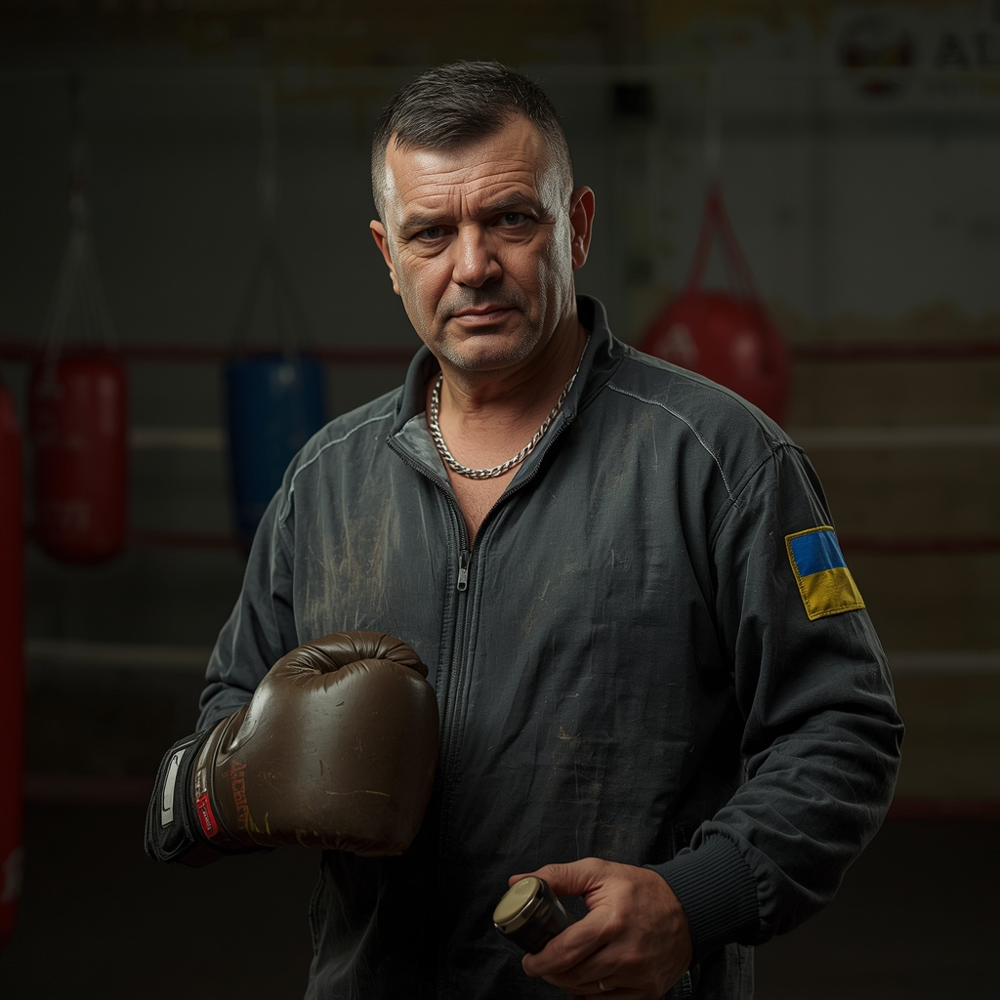
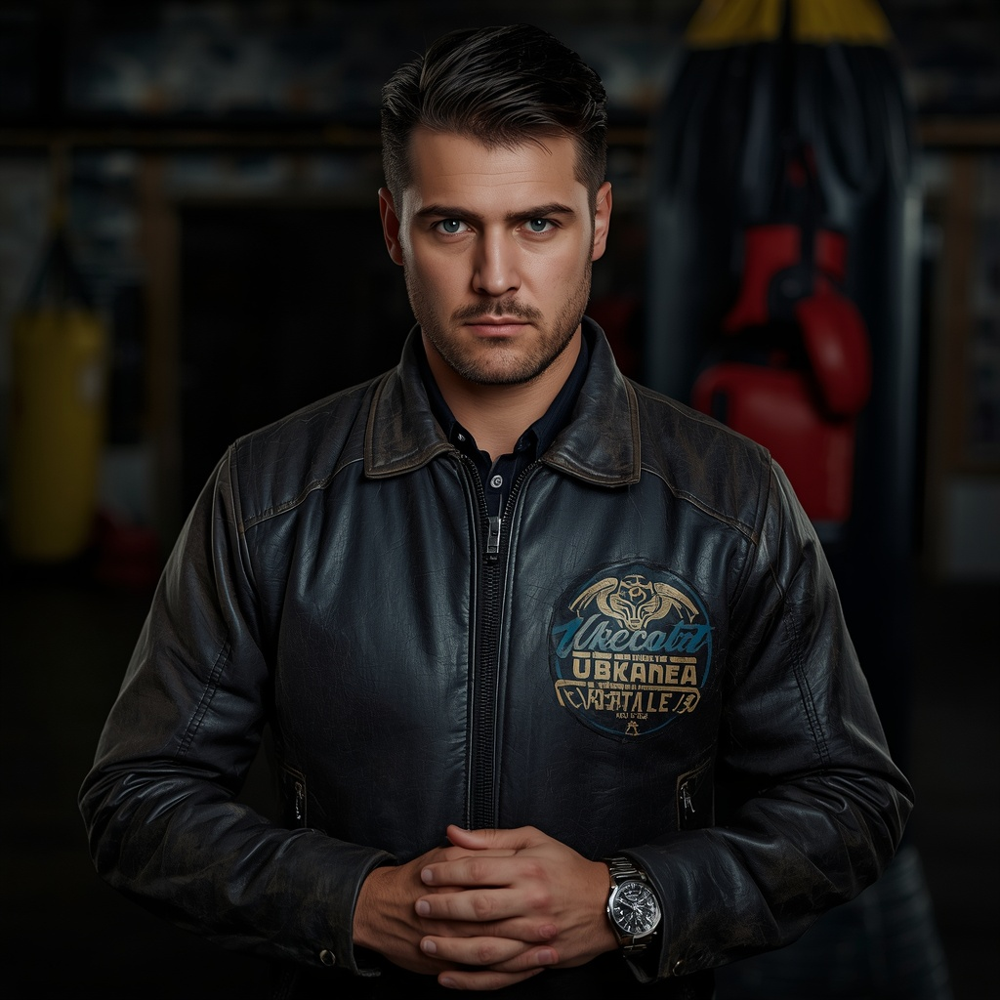
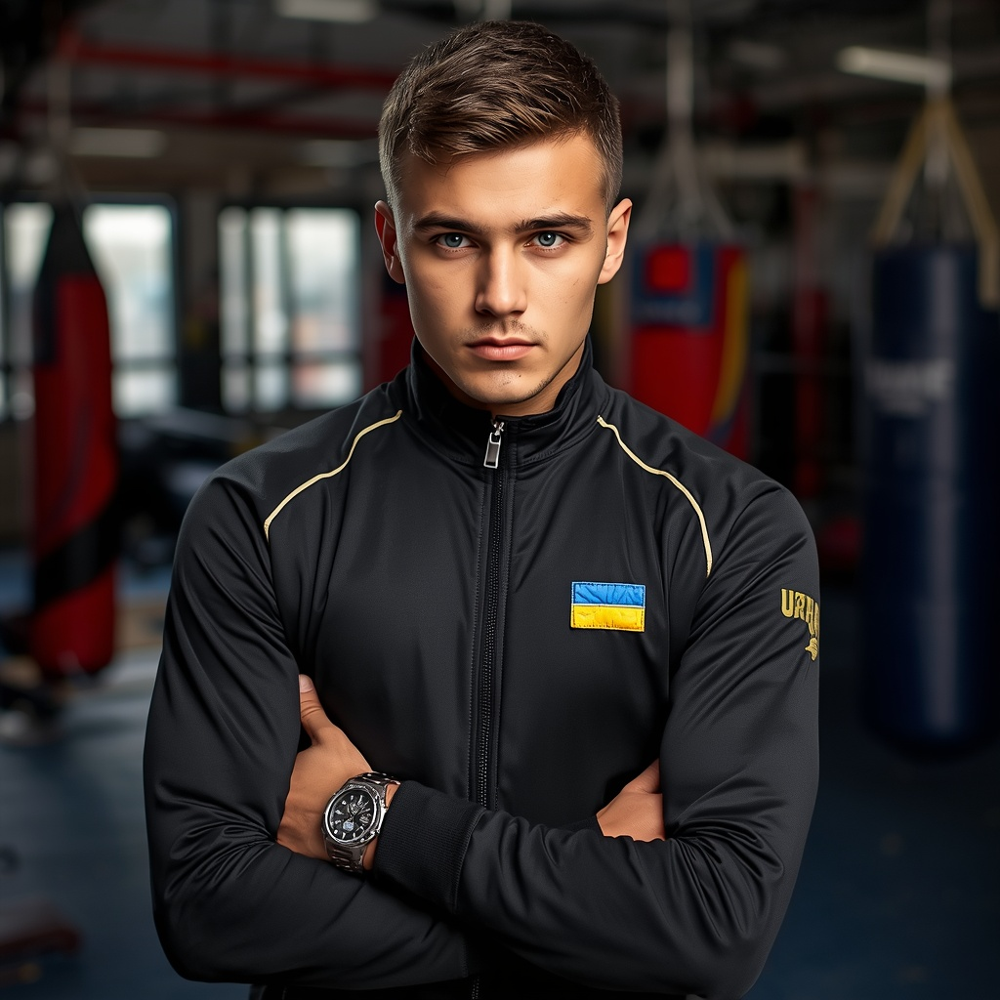
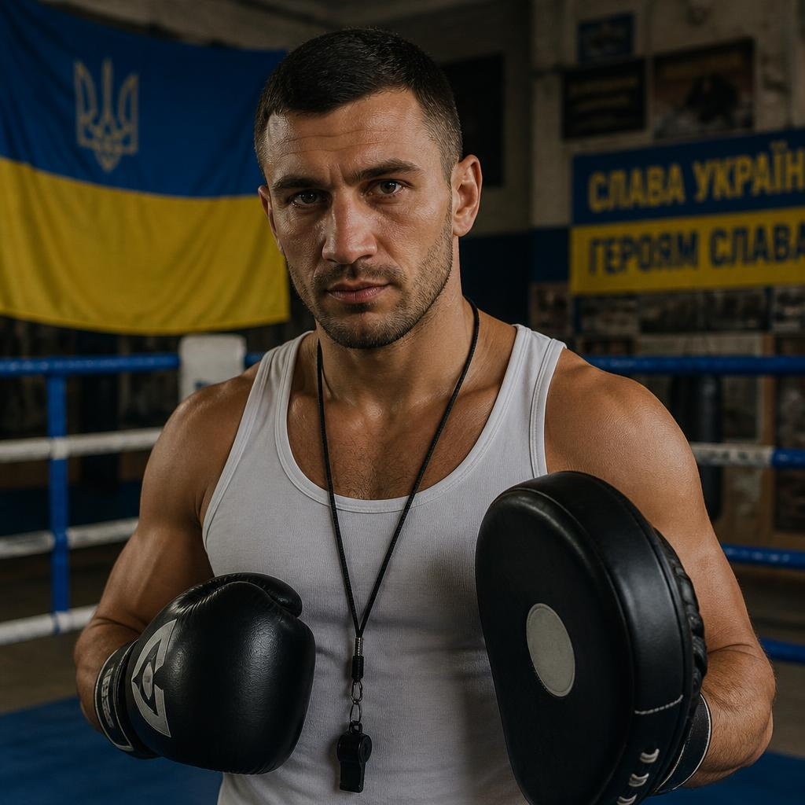
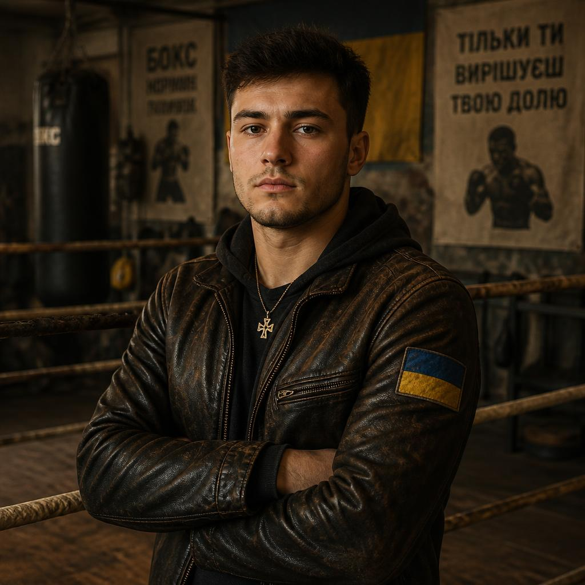
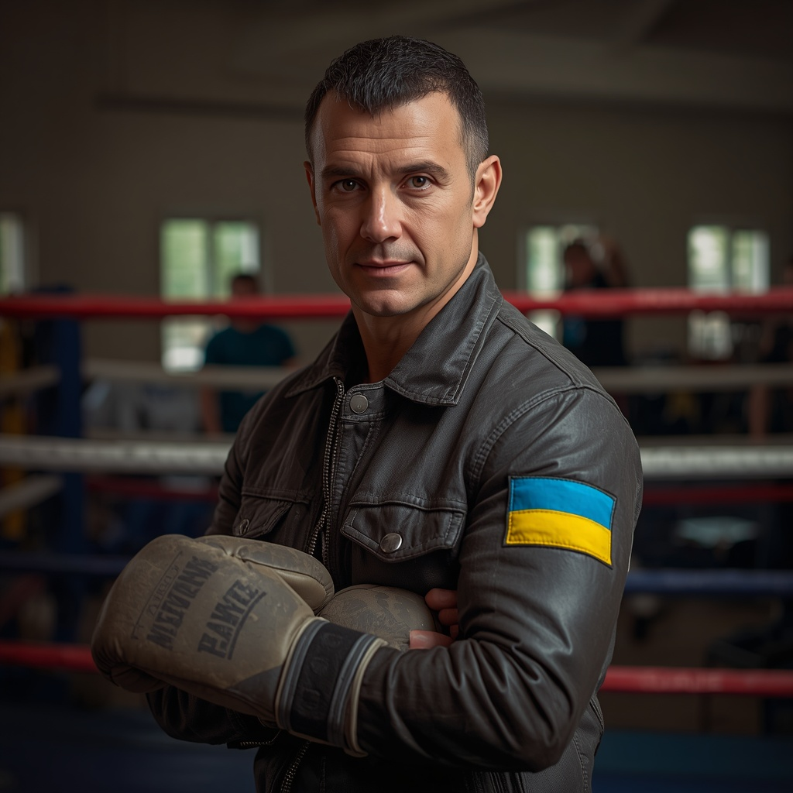

Бокс — один із найдавніших та найпопулярніших видів єдиноборств. Сучасні правила зародилися в Англії 1867 року. Змагання проходять на рингу розміром від 4,9 до 6,1 метра, огородженому канатами. Найпрестижніші турніри: Олімпійські ігри та бої за титули чемпіона світу (WBC, WBA, IBF). Найкращі бійці в історії — Алі, Тайсон, Льюїс. Матч обслуговує рефері у рингу та три бокові судді, діє система відеоповторів. Бокс розвиває витривалість, реакцію, силу та тактичне мислення.


Правила Бій триває до 12 раундів (кожен по 3 хвилини з перервою в 1 хв). У рингу змагаються 2 бійці, заміни заборонені. Мета — завдати більше точних ударів або перемогти нокаутом. Ниче пояса бити не можна (дозволено в голову та тулуб). Нокдаун — якщо боєць упав, рефері рахує до 10 секунд. Порушення (удар головою, по спині) — попередження або зняття очок. За грубі порушення бійця дискваліфікують. Клінч (взаємне затискання рук) зупиняє рефері.

Артур Данилов — Бокс. Досвід: 15 років. Спеціалізація: ближній бій, серійні атаки, психологічна підготовка. Досягнення: заслужений тренер України, підготував 5 майстрів спорту. Про себе: «Навчу працювати першим номером, затискати в канатах та достроково завершувати поєдинки».

Максим Кличко — Бокс. Досвід: 12 років. Спеціалізація: важка вага, техніка джебу, захист корпусом. Досягнення: майстер спорту міжнародного класу, виховав чемпіона Європи серед молоді. Про себе: «Вчу тримати дистанцію, бити точно і прораховувати кожен крок суперника».

Денис Воронов — Бокс. Досвід: 6 років. Спеціалізація: робота ніг (footwork), швидкість реакції, захист ухилами. Досягнення: сертифікований тренер AIBA, колишній професійний боєць. Про себе: «Поставлю ідеальну роботу ніг, щоб ти порхав по рингу і не давав супернику шансу влучити».

Роман Царьов — Бокс. Досвід: 9 років. Спеціалізація: контратаки, нокаутуючий удар, тактичний аналіз. Досягнення: диплом академії спорту, вивів аматорський клуб у топ-3 на національному рівні. Про себе: «Вчу ловити суперника на помилках і ставити потужний удар, який вирішує хід усього бою».

Ігор Коваль — Бокс. Досвід: 4 роки. Спеціалізація: базові навички, постановка удару з нуля, витривалість. Досягнення: призер всеукраїнських турнірів, засновник школи боксу для початківців. Про себе: «Поставлю правильну базу без травм, навчу захищатися та допоможу повірити у власну силу».

Олег Назаренко — Бокс. Досвід: 8 років. Спеціалізація: функціональний тренінг, кросфіт для боксерів, комбінації. Досягнення: сертифікат з фізичної підготовки бійців, вивів 3 спортсменів у професійні ліги. Про себе: «Прокачаю твою дику витривалість та швидкість ударів, щоб ти легко домінував усі 12 раундів».